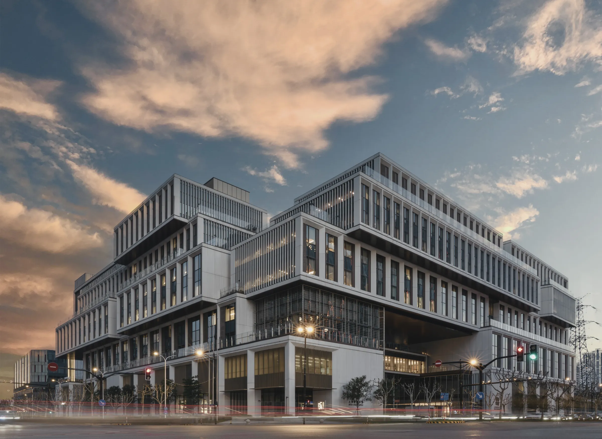
Commercial Photography
photography
Photography as communication, atmosphere and evidence.
From fast-moving institutional events to architecture and everyday student life — images made to be used, and remembered.
People in motion.
Responsive coverage of speakers, workshops, ceremonies and community events. I look for gestures, exchanges and decisive moments that communicate both the programme and its atmosphere.
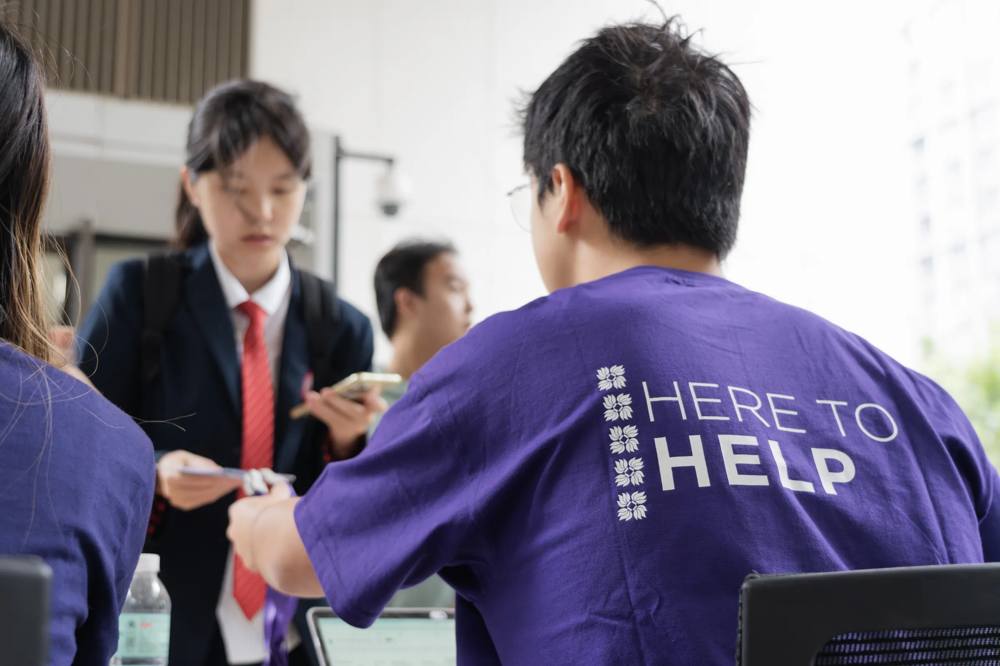
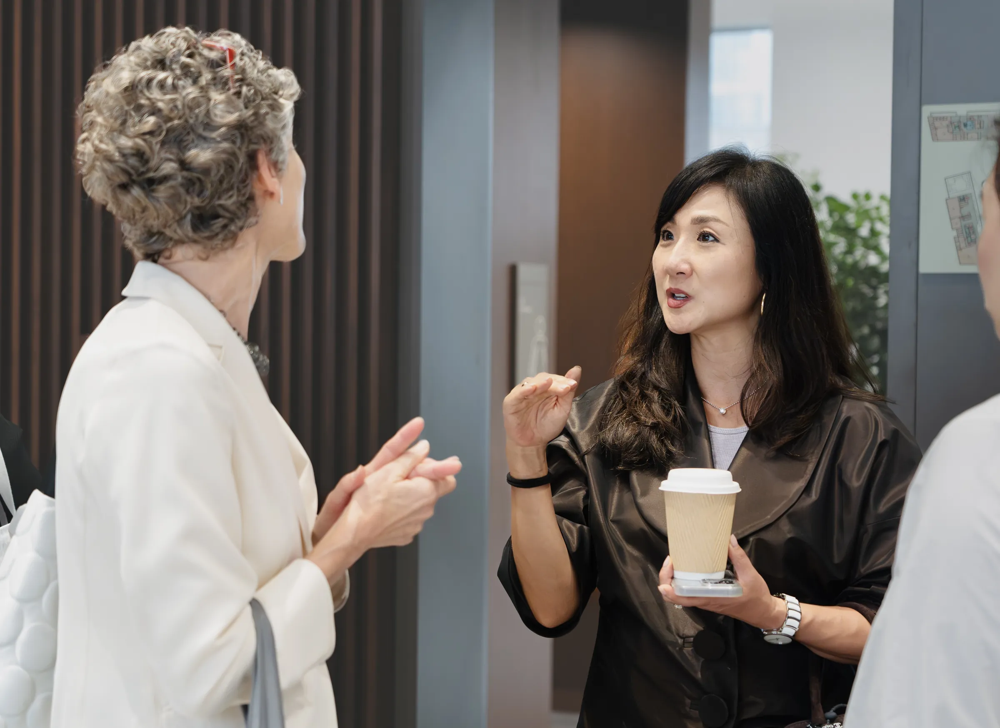
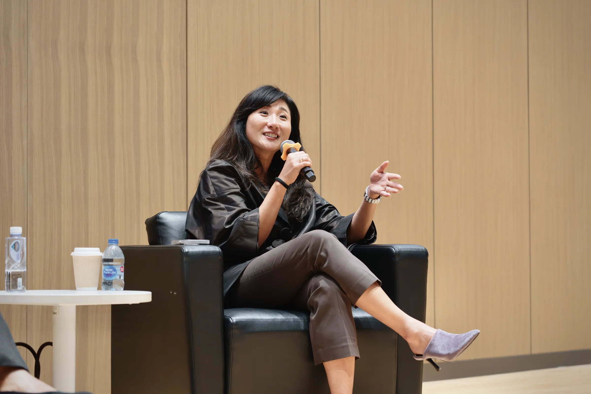
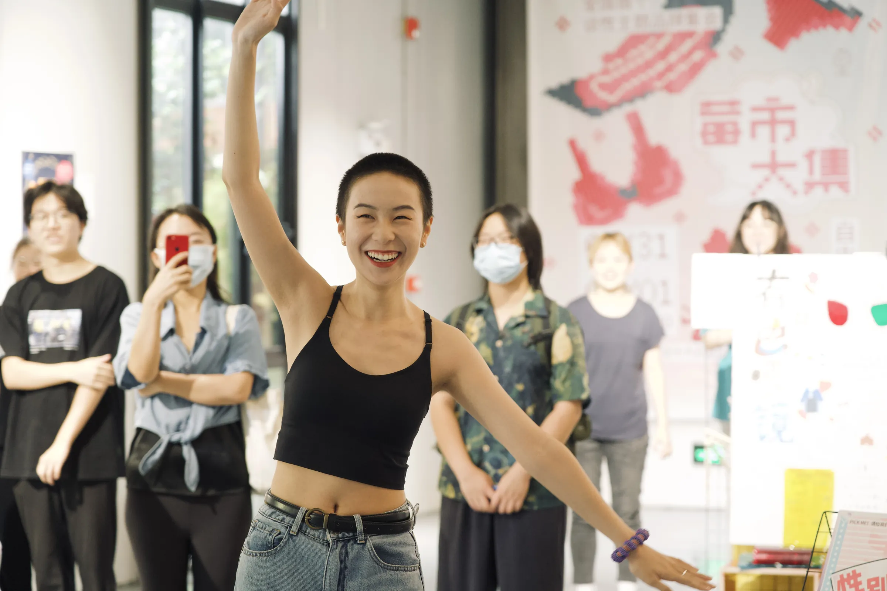
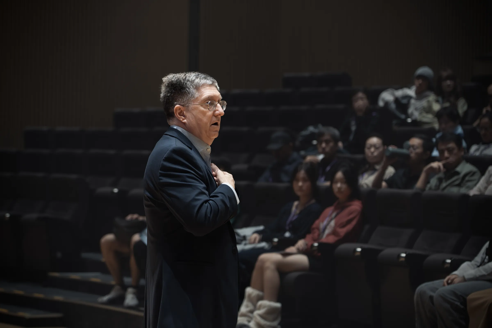
Place & identity.
Large-format institutional imagery for brochures and communications: campus exteriors, architectural atmosphere, Shanghai landmarks and everyday student life.
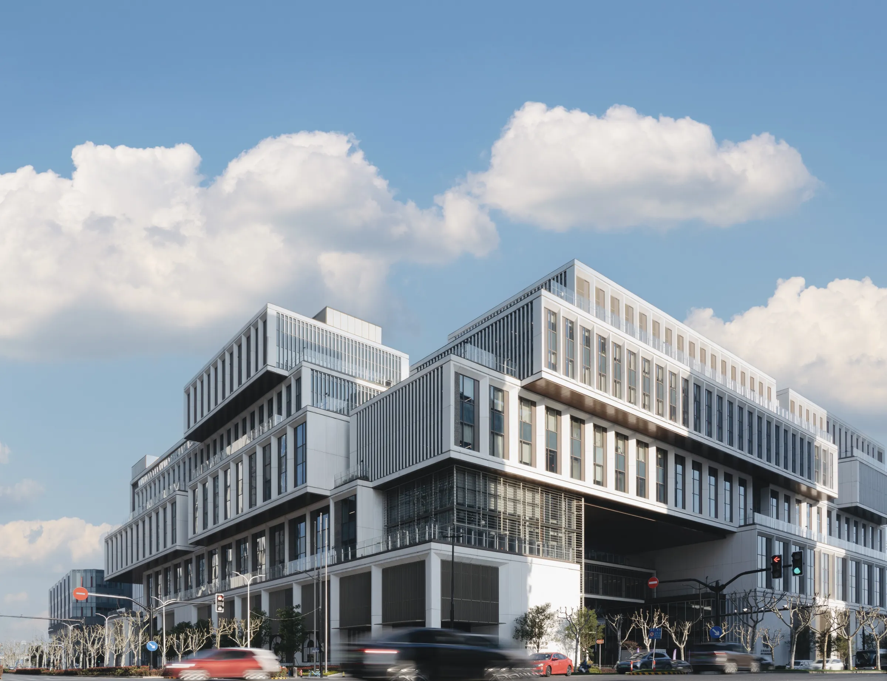
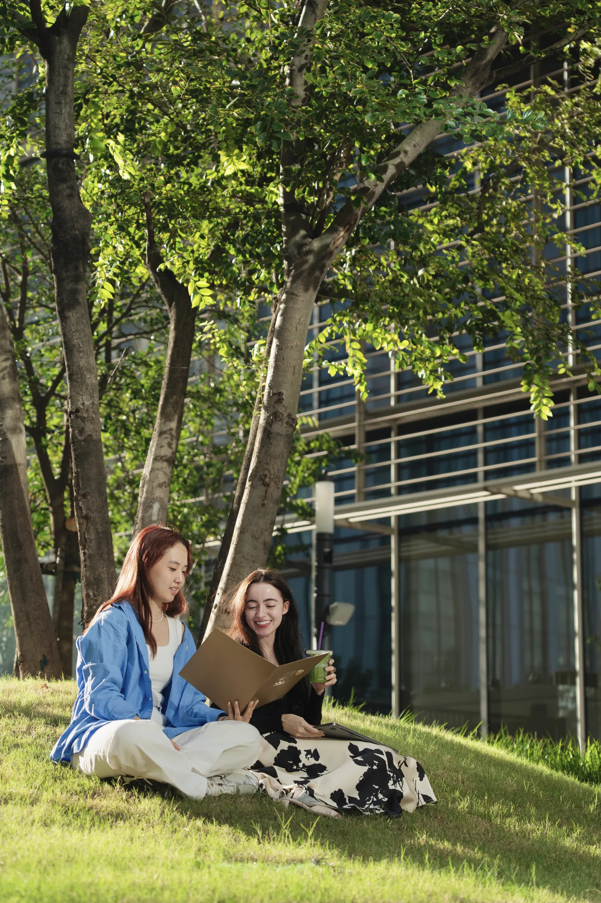
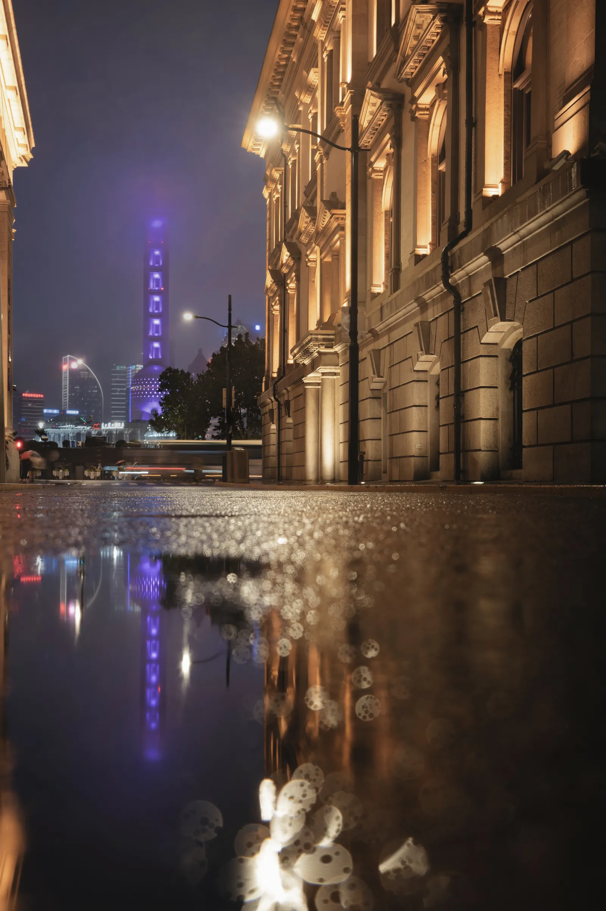
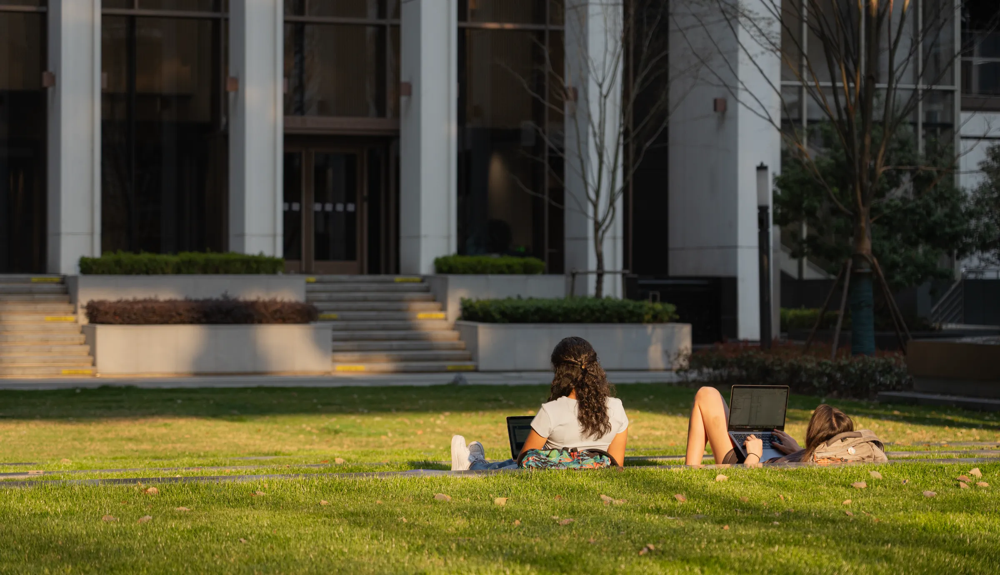
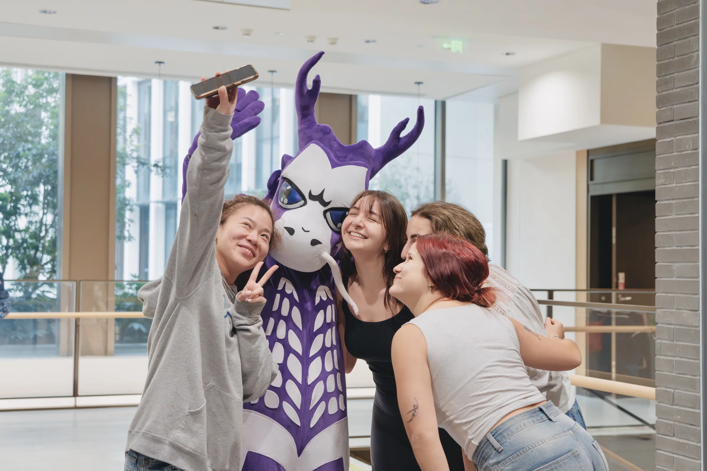